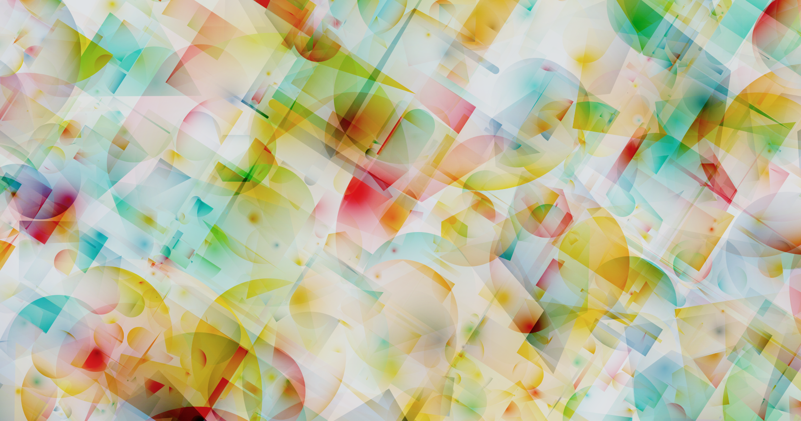
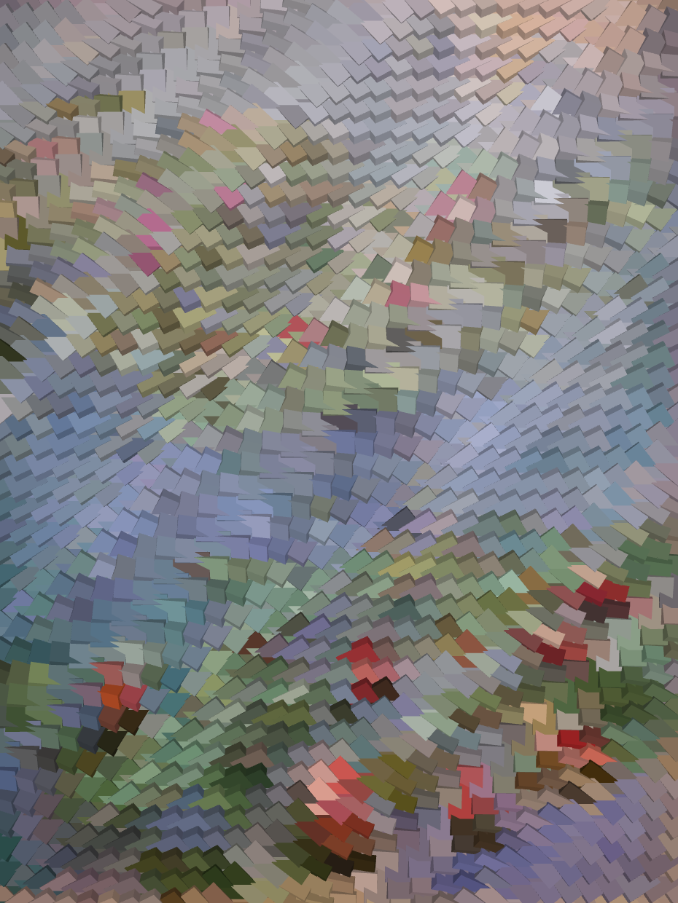

Here presents some projects which I have worked on. A complete list of my publications in chronological order is listed at the bottom of this page. The most up-to-date publication list can be found in my Google Scholar site.


@misc{jiang2025detectpointprediction,
title={Detect Anything via Next Point Prediction},
author={Qing Jiang and Junan Huo and Xingyu Chen and Yuda Xiong and Zhaoyang Zeng and Yihao Chen and Tianhe Ren and Junzhi Yu and Lei Zhang},
year={2025},
eprint={2510.12798},
archivePrefix={arXiv},
primaryClass={cs.CV},
url={https://arxiv.org/abs/2510.12798},
}